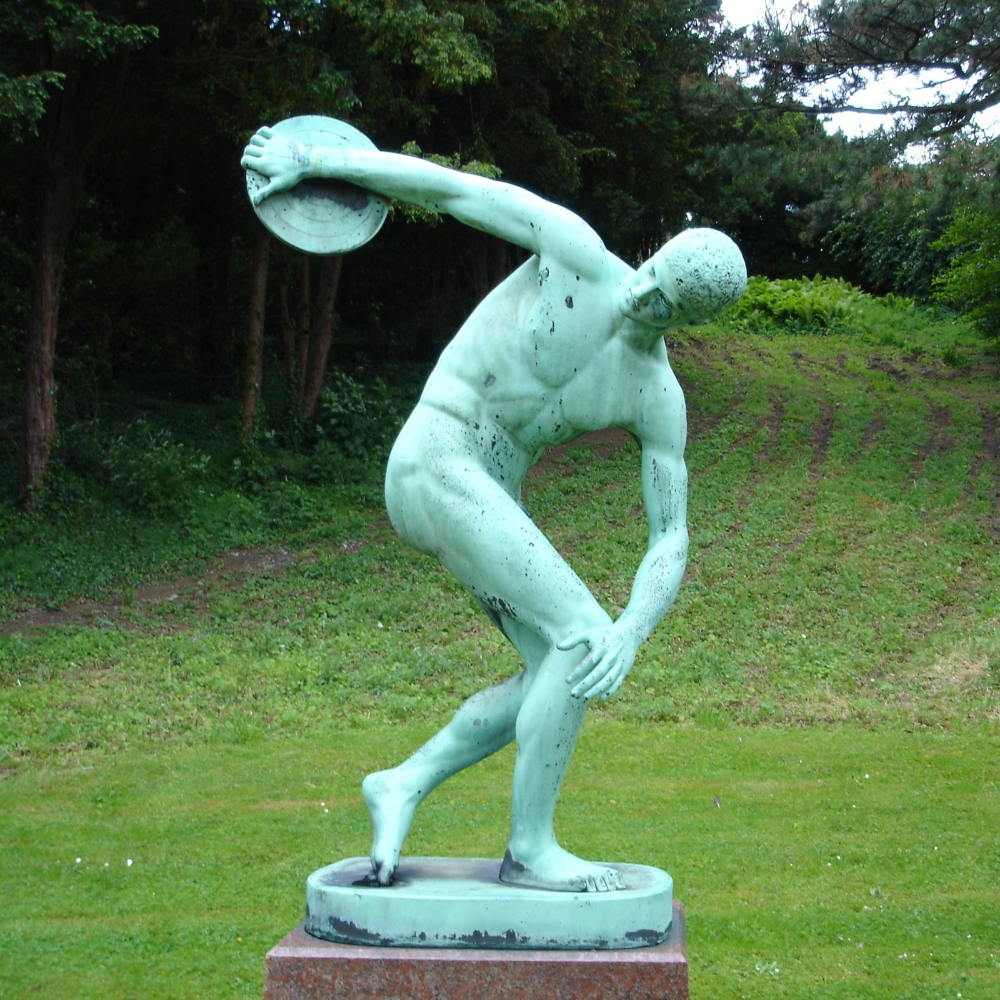

Antické korene
Disk bol súčasťou päťboja na antických olympijských hrách.
04 / HISTÓRIA
Štyri zastavenia v príbehu disciplíny, ktorá prežila tisícročia.
Disk bol súčasťou päťboja na antických olympijských hrách.
Mužský hod diskom bol na programe prvých moderných hier v Aténach.
Ženský hod diskom mal olympijskú premiéru na hrách v Amsterdame.
Američan Al Oerter vyhral túto disciplínu na štyroch po sebe idúcich olympiádach.
